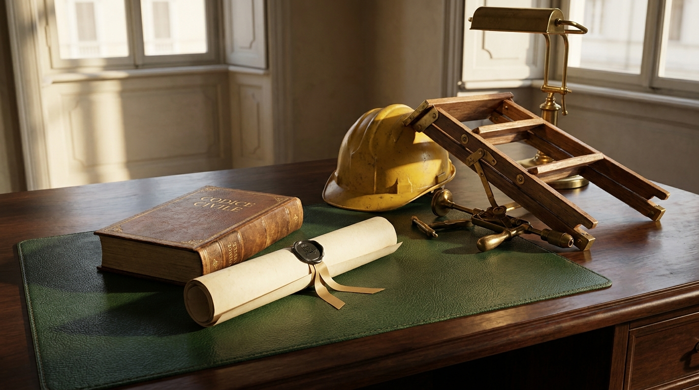

Infortunio del tecnico in casa: quando risponde anche il committente privato
Chi affida lavori a un tecnico in casa propria non è sempre estraneo alle conseguenze di un infortunio. La Cassazione penale ha confermato la condanna di una proprietaria per la morte di un elettricista, fondando l'addebito sulla mancata verifica delle competenze professionali dell'incaricato. Un principio che ridisegna gli oneri di chi commissiona lavori domestici.

Il caso
Una proprietaria affida lavori elettrici alla propria abitazione. Durante l'esecuzione, l'elettricista perde la vita. La Cassazione penale conferma la condanna della committente per omicidio colposo: non aveva verificato che l'incaricato possedesse l'idoneità professionale richiesta dalla natura dei lavori.
*Nota: la pronuncia è riportata dalla fonte senza gli estremi identificativi (sezione e numero). Si segnala l'opportunità di verificarli prima di ogni utilizzo argomentativo, trattandosi del fondamento della tesi.*
Il punto giuridico è netto: anche il committente privato, pur non imprenditore, può rispondere penalmente se sceglie un soggetto manifestamente inidoneo a svolgere in sicurezza l'attività affidata.
Inquadramento normativo
Va chiarito subito un equivoco diffuso. La responsabilità del committente non si fonda sull'art. 14 del D.lgs. 81/2008, che disciplina tutt'altro: i provvedimenti di sospensione dell'attività imprenditoriale per lavoro irregolare o violazioni gravi.
Il perimetro corretto è duplice.
Sul piano della sicurezza, l'art. 26 del D.lgs. 81/2008 impone al committente, nei contratti d'appalto e d'opera, di verificare l'idoneità tecnico-professionale delle imprese e dei lavoratori autonomi incaricati. Per i cantieri edili si applica invece il Titolo IV (artt. 89 e 90), che individua specifici obblighi del committente.
Qui si inserisce il nodo interpretativo. L'art. 26, comma 1, esclude espressamente dal suo ambito i servizi domestici e familiari: il committente privato non imprenditore non è, in linea di principio, gravato dagli obblighi formali di quella norma. Ma l'esclusione opera sul piano della disciplina prevenzionistica, non cancella la responsabilità penale generale.
La condanna si regge infatti sul combinato tra l'art. 2087 c.c., gli artt. 40, comma 2, e 589 c.p. Il primo radica un dovere di protezione; l'art. 40 cpv. c.p. equipara il non impedire un evento, che si aveva l'obbligo giuridico di impedire, al cagionarlo (è la cosiddetta posizione di garanzia); l'art. 589 punisce l'omicidio colposo.
I due piani della responsabilità
È essenziale distinguere due profili che spesso vengono confusi.
La responsabilità esecutiva riguarda le modalità concrete con cui il lavoro viene svolto: la scelta degli strumenti, l'osservanza delle cautele tecniche, la gestione del rischio operativo. Questa grava in primo luogo su chi esegue.
La culpa in eligendo è cosa diversa. È la colpa nella scelta dell'incaricato: il rimprovero non è di aver eseguito male, ma di aver affidato l'attività a un soggetto privo delle competenze necessarie. È su questo secondo piano che la Cassazione ha agganciato la responsabilità della committente.
In termini semplici: chi commissiona lavori pericolosi ha l'onere di assicurarsi che chi li svolge sia in grado di farlo in sicurezza. Affidarli a chi non ne è capace, quando ciò era riconoscibile, integra una condotta colposa autonoma.
Implicazioni pratiche
Per chi affida lavori alla propria abitazione, il messaggio è chiaro: l'esclusione formale dagli obblighi dell'art. 26 non garantisce immunità penale.
La verifica dell'idoneità professionale del tecnico non è una formalità burocratica, ma un comportamento esigibile. Più l'attività è rischiosa (impianti elettrici, lavori in quota, gas), più stringente è l'onere di selezione.
Resta fermo che la responsabilità penale è personale e va accertata caso per caso: non esiste automatismo. Conta la concreta riconoscibilità dell'inidoneità e il nesso tra la scelta e l'evento.
Cosa fare in concreto
- Verificate l'abilitazione. Chiedete la documentazione che attesta la qualificazione dell'impresa o del professionista (iscrizione camerale, abilitazioni di settore, dichiarazione di conformità prevista per gli impianti).
- Privilegiate l'incarico scritto. Un contratto d'opera che individui con precisione attività e responsabilità riduce le zone grigie e documenta la diligenza nella scelta.
- Conservate ogni evidenza. Preventivi, qualifiche, comunicazioni: tutto ciò che dimostra la verifica preventiva dell'idoneità ha valore probatorio.
- Non improvvisate per i lavori a rischio. Per impianti elettrici, lavori in altezza o su gas, affidatevi solo a soggetti formalmente abilitati e assicurati.
- Consultate un legale in caso di infortunio. Davanti a un evento lesivo, la posizione del committente va valutata subito: i due piani di responsabilità richiedono un'analisi tecnica mirata.
---
*Contributo informativo a cura di Tamburro & Partners – Avv. Giuseppe Tamburro. Non costituisce parere legale.*
Ogni storia di lavoro ha i suoi tempi.
Se gestisci HR e vuoi un confronto su contenzioso, ispezioni o licenziamenti, scrivi allo studio. Ti rispondiamo entro un giorno lavorativo.